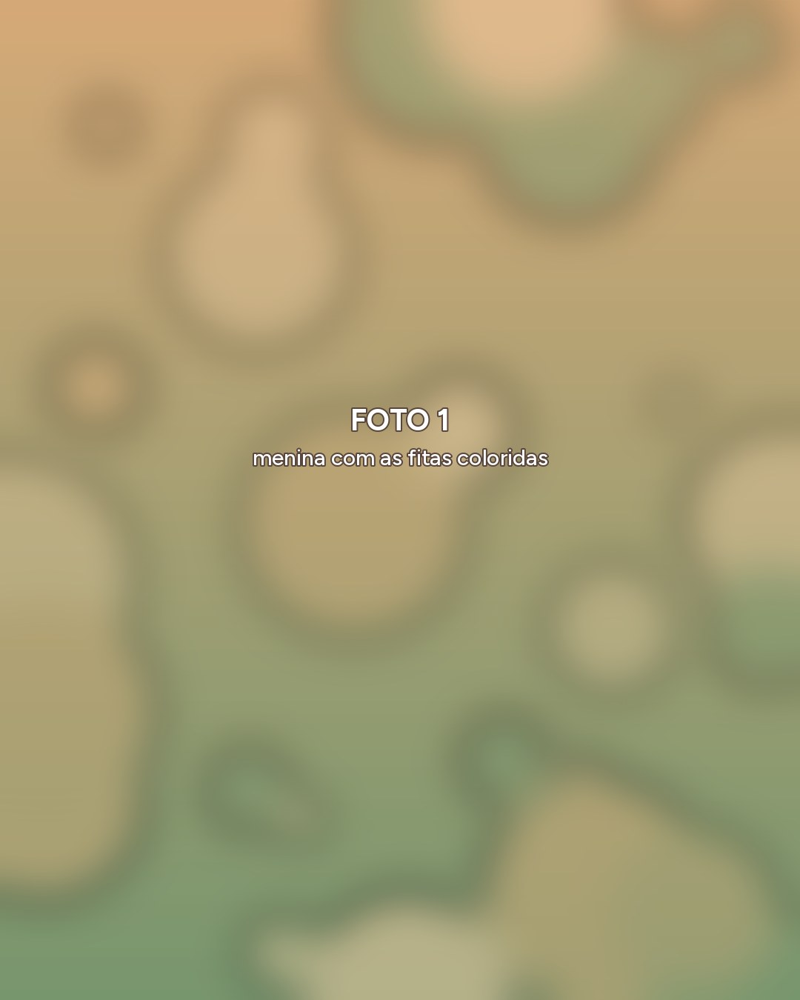
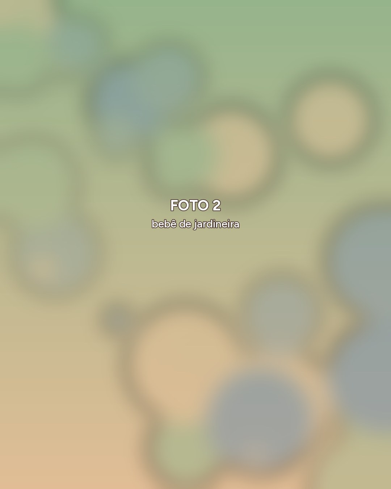
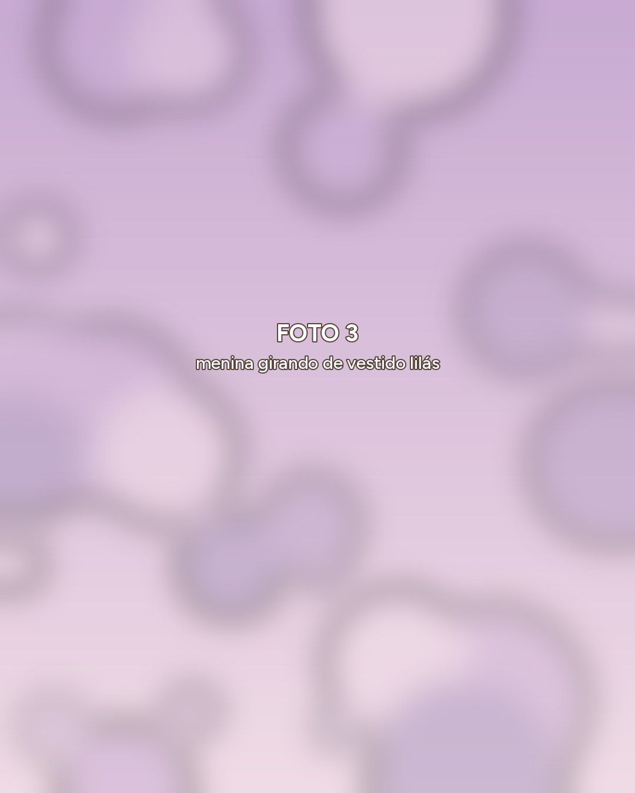
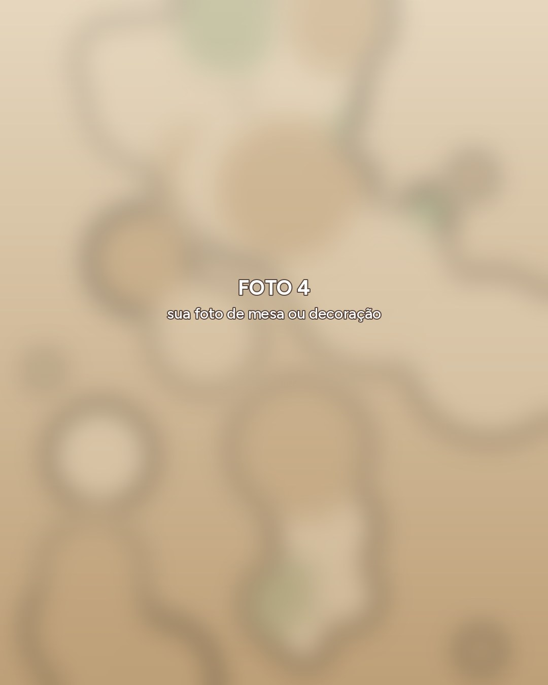
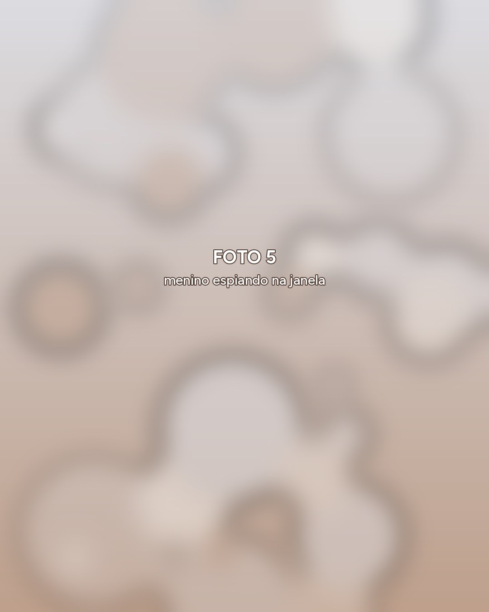
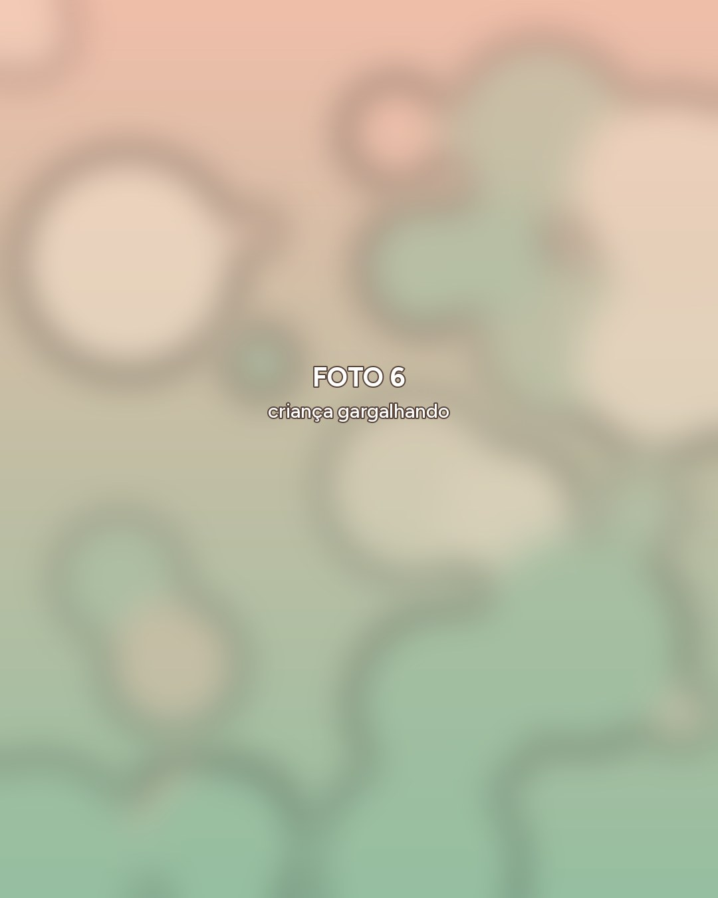

Veja por onde começar
(quase todo mundo erra)

Passo 1
Com essas escolhas feitas, fica mais fácil organizar os próximos detalhes da festa.

Passo 2
Eu acompanho as brincadeiras e os momentos de verdade, sem poses forçadas.
Esse é o passo que quase todo mundo deixa pro final.

Passo 3
Planeje esses detalhes com carinho e combine os prazos com cada fornecedor. Assim, tudo vai ganhando a cara de vocês.

Seu filho livre para brincar. Você junto, vivendo a festa.
E eu registrando os abraços, as risadas e tudo que acontece pelo caminho.

Me conta a data e o local da festa do seu filho. Eu te digo se tenho disponibilidade para estar com vocês.
Chamar no WhatsApp